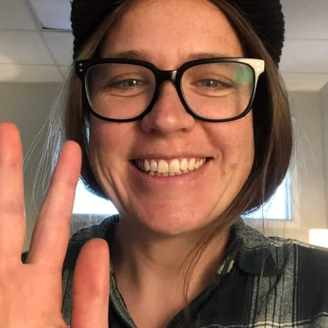

The Center
Lisa Wallace, LPC
Contemplative psychotherapist. Naropa, 2017. Boulder, by way of a mountain town, two degrees I use sideways, and a meditation practice I started because nothing else was working.
Where I come from
A Colorado mountain town, and a long stretch of not being okay.

Boulder, Colorado
I grew up in a middle class mountain community in Colorado. That's where my attachment to the earth comes from, and probably my impatience with people who talk about nature preciously.
For a long stretch I was in pain and depressed. I didn't come to meditation because it sounded restorative. I came to it because I'd run out of other ideas. I studied seriously with Micheal Gregory at Mindfulness Meditation Centers, and that practice is what first let me see my own queerness clearly.
It's also where I began to understand my privilege as a White person in this country. That's work I'm still doing and expect to be doing for the rest of my life. I mention it here because you deserve to know what your therapist is and isn't paying attention to.
What I studied
Film production and religious studies. Neither was a detour.
I have two undergraduate degrees from CU Boulder, in film production and religious studies. The religious studies degree is why faith deconstruction doesn't rattle me. The film degree is probably why I pay so much attention to how a person tells their own story, and to which scenes they keep cutting out.
In 2014 I went back to school to become a therapist. I graduated from Naropa University's Contemplative Psychotherapy program in 2017, then spent three years at Umbrella Collective, a practice built around LGBTQIA+ clients.
Since then: WPATH training for gender affirming care, EMDR, Level I Internal Family Systems, and a mindfulness instructor certification through Naropa and iBme.
How I actually work
You're in the driver seat. I have a map.
There's no single model I apply to everyone. You're driving. I have a map, I know some of these roads, and now and then I'll mention that a turn looks worth taking.
You're already sane. Not fine, not unbothered, not finished. Sane.
Whatever you're doing made sense given what happened to you. Once that's clear, the question stops being what's wrong with you and starts being what you want instead. That shift is most of the work.
I ask for feedback and I mean it. If something I said landed badly, say so. I'm accountable to my clients and to my community, which isn't a slogan. It's how I avoid turning into a therapist who's certain about people.
Being human is messy. Let's see if we can find a way to come together in that mess.

I can help you fall in love with yourself only insofar as I've done it myself.
Lisa Wallace, LPC
Licensed Professional Counselor in Colorado. Telehealth statewide, in person in Boulder some weeks.